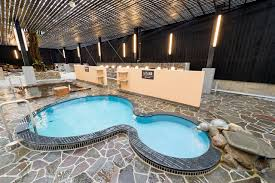
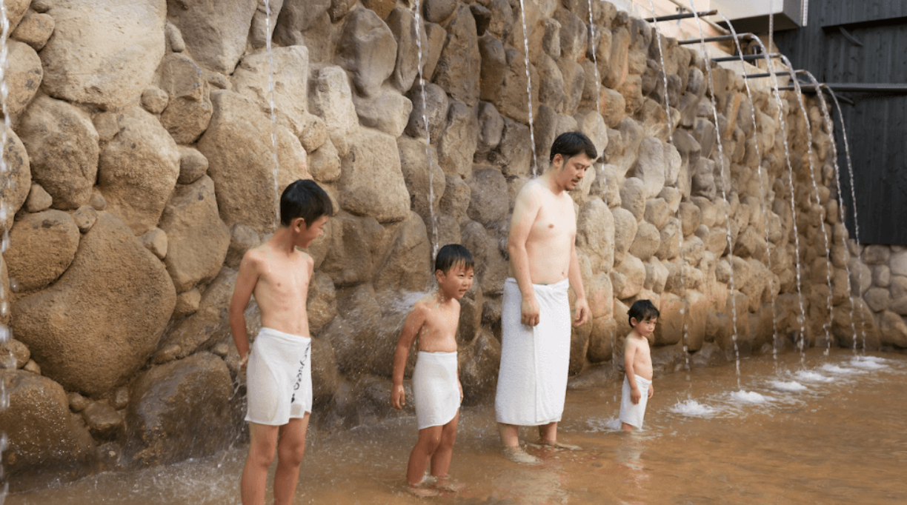
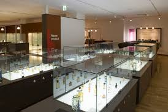
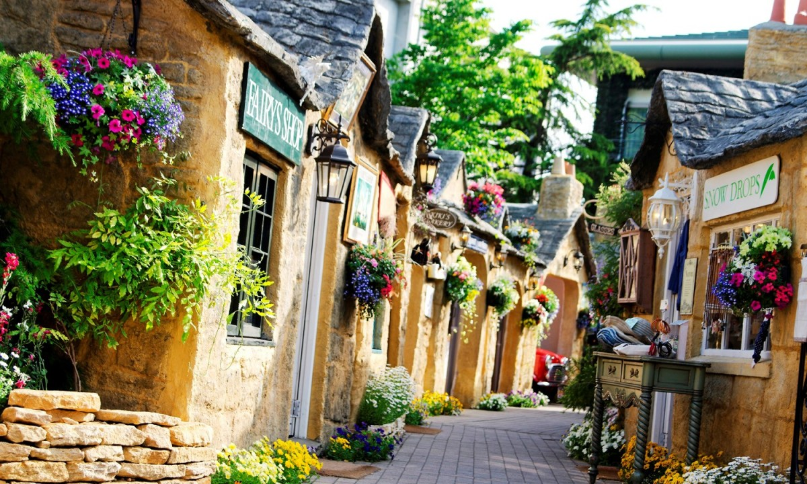
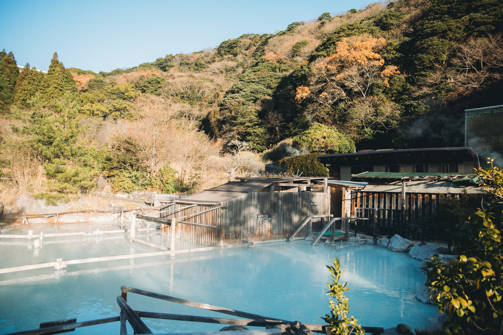
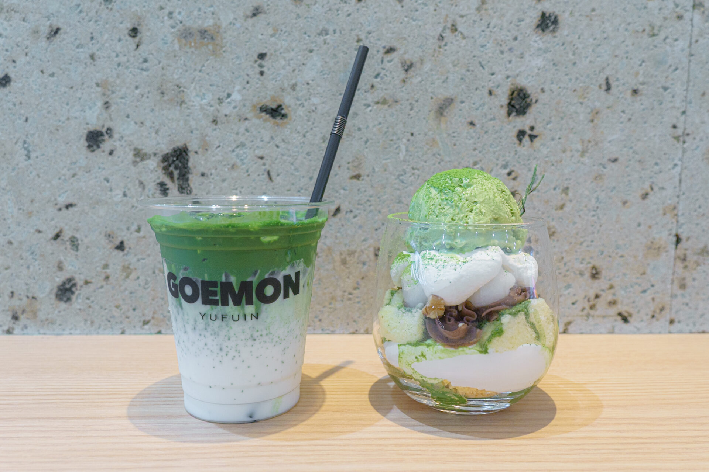
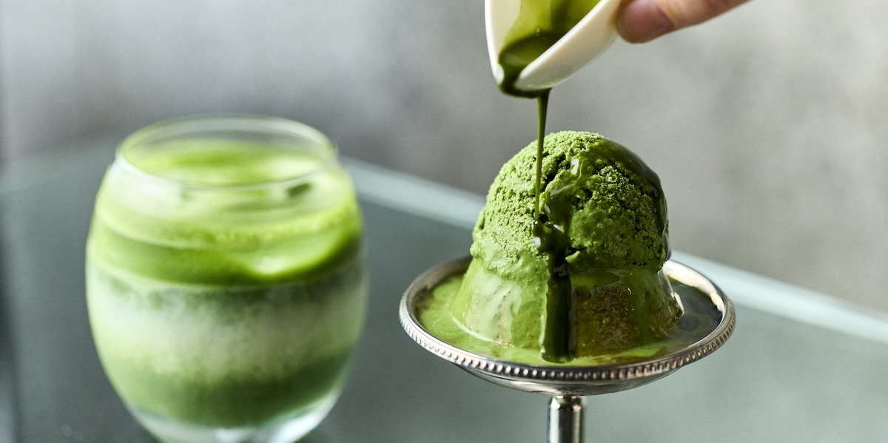
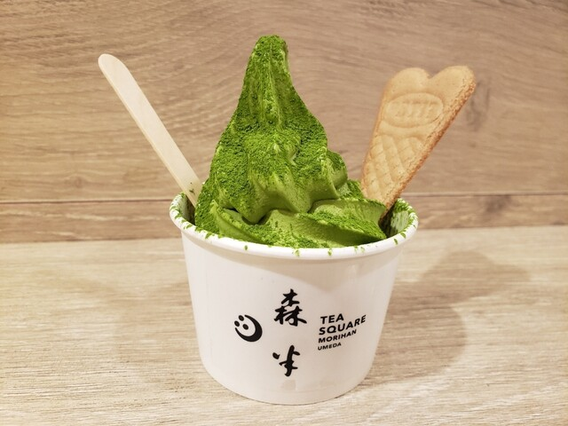

別府
ホテルからの所要時間：徒歩14分程度
定休日:年中無休
営業時間:9:00〜1:00
大浴場入浴料:大人1,080円(13歳以上)
家族風呂さくっと60分コース:2,400円
ゆったり75分コース:3,000円
のんびり90分コース:3,600円
砂湯貸し浴衣(砂湯用パンツ込):760円
タオル:250円
貸しバスタオル:200円
ナイロンタオル:250円
男湯女湯共通
大浴場

ひょうたん温泉®のお湯は「純度100%の源泉かけ流し」。多くの温泉施設では、温度調整に水道水の加水や、 長い時間をかけた自然冷却で冷えた源泉を使用していますが、 ひょうたん温泉®では独自技術の竹製温泉冷却装置「湯雨竹®（ゆめたけ）」 で瞬時に冷ました源泉を利用。
酸化や劣化していない、湧きたてで新鮮な生湯（※なまゆ） で満たした「本物の源泉かけ流し風呂」を楽しめます。
隠れミッキーならぬ隠れひょうたんがあるらしい…
生湯（なまゆ）とは・・・ 竹製温泉冷却装置「湯雨竹®（ゆめたけ）」により、 劣化していない「純度100%の源泉かけ流し」が実現しました。 この新鮮さを保ったまろやかな源泉由来の湯を、 ひょうたん温泉®では、「生湯（なまゆ）と呼んでいます。
瀧湯

男湯では19本、女湯では8本の瀧湯。打ち付ける水圧はマッサージのように筋肉のこわばりを解き、 腰痛、肩こりなどに効果があると言われています。
その名が示す通り、滝を連想させるような勢いのお湯に打たれていると、 心が洗われるような不思議な気持ちにも。
女湯
檜風呂
檜の持つリラックス効果でゆったりくつろぐ檜風呂。夢見の湯
浴槽にとわだ石と檜を贅沢に使用したお風呂。岩風呂
ひょうたん温泉®の由来でもある、「ひょうたん型」のユニークな温泉。冷却温泉風呂
ひょうたん温泉®の水風呂には独自技術の竹製温泉冷却装置「湯雨竹®（ゆめたけ）」で瞬時に冷ました源泉を利用。むし湯（高温・低温）
身体のコリがじんわりほぐれ、ゆったりデトックス気分。低温は、蒸し湯初心者のお客様やお子様もお楽しみいただけます。
むし湯（高温）
リニューアル前から引き継がれている初代むし湯です。切り石風呂
落ち着いた雰囲気がほっとやすらぐ切り石風呂です。盃風呂
ひょうたんから湯が注がれるユニークなお風呂です。風の露天風呂
外の空気を感じながらゆったりとくつろぐ露天風呂では、爽快な開放感をお楽しみいただけます。滝の露天風呂
風の露天風呂に滝がつながっている露天風呂。男湯
檜風呂
檜が持つリラックスパワーでのびのびくつろげる檜風呂。歩行湯
足裏へのほどよい刺激が心地よい歩行湯。岩風呂
ひょうたん温泉®が大切にしている「和、岩、木、石」のイメージを表現した岩風呂です。むし湯(高温・低温)
温泉の蒸気を利用した天然のスチームサウナです。露天風呂
広い露天風呂ではのびのびとリラックスタイムをお楽しみいただけます。水風呂
むし湯や温泉の合間にご利用ください。
ホテルからの所要時間：徒歩32分程度
休館日:博物館・毎月第3木曜日
12月31日、1月1日～1月3日
カフェ 定休日：毎月第１、第３月曜日、日曜日
営業時間:10:00〜18:00
入館料:一般700円
高校・大学生500円
instagram: 大分香りの博物館

調香体験～オリジナル香水づくり～
10:30~/13:00~/15:00~/16:30~
世界に１つだけのオリジナル香水作り体験や、ハーブガーデンでは天然温泉足湯も楽しむことができます。
香りの品々を集めたミュージアムショップ、イタリアンカフェも人気です。
香りプロダクトギャラリー
香りはどのように作られて、どれくらいの種類があるのか、香料の紹介や調合方法などの紹介や、 FIFI賞受賞コーナーでは、受賞した香水を展示しています。中央ケースには収蔵している香水コレクションを色や形に分類して展示しています。（展示替えは順次行っています。)
香りヒストリーギャラリー
においのサイエンスや医学薬学の研究、 古代エジプトからアールヌーボー・アールデコ時代の香りの歴史について紹介をしています。
ホテルからの所要時間：公共交通機関1時間10分程度
定休日:年中無休
営業時間:9:30〜17:30
入場料:無料
フクロウの森入場料:大人700円(13歳以上)
チェシャ猫の森入場料:大人800円(13歳以上)
※：トイレ使用時にフローラルヴィレッジで買い物したレシートを提示が必要

《湯布院 フローラルヴィレッジ》は『ハリー・ポッター』の撮影地にも採用された「イギリス」のコッツウォルズ地方の街並みを再現したミニテーマパークです。イングリッシュガーデン風の施設内は季節ごとに色とりどりの美しい花々が咲き乱れ、従来の『湯布院（由布院）』のイメージと少し異なる新しい楽しさと癒しをお届けします。 敷地内にはキレイな花がさきみだれ、散策や、グルメ、ショッピングが楽しめます。
「OWL'S FOREST フクロウの森」
「OWL'S FOREST フクロウの森」では、可愛いフクロウさんたちが出迎えてくれます。写真は「ハリー・ポッター」シリーズでもおなじみのハリーが飼っている、シロフクロウの「ヘドウィグ」。 （こちらでも同じ名前）丸っこい雪だるまみたいで、思わず触れてみたくなりますね。
「Owl's Photo Studio」では、フクロウの手乗せ体験もできちゃいます。
ハリーポッター風のローブを着て、魔法の杖を持ち、アフリカワシミミズクのブラウンを手にのせて記念撮影ができますよ。
※手乗せ体験・写真撮影：３００円（入場料別）
others
ほかにもムーミンファン必見の「Moomin’s Shop」や ピーターラビットと仲間たちのグッズが揃う「The Rabbit」、 「不思議の国のアリス」に登場するチェシャ猫が住む森をイメージした猫カフェ「Gallery Alice's Tearoom チェシャ猫の森」があります。
ホテルからの所要時間：バス14分程度
定休日:年中無休
営業時間:9:00〜20:00
入浴料:1,500円

露天鉱泥浴場
適度な噴気、腐食粘土層、ミネラル水という三大条件のもとにのみ産出される鉱泥は 他に類をみない稀少且つ貴重な地獄から直結した温泉です。普通の温泉より比重が重く浮力が大きいので浸かると不思議な浮遊感が楽しめます。
風呂の中には掴まり棒があります。
お湯の流れにもてあそばれないように、しっかり掴まって下さい。
重力を忘れ、宇宙遊泳をしているようなこの状態は、血流を良くして、関節炎、肩こりに効力を顕します。
体が開放されたこの状態は、硫黄成分の浸透力を非常に高め、リュウマチ治癒に絶大な効果を発揮します。
泥湯は全般に、水からの沸し湯に比べ５倍の熱保有度を持ちます。
地下鉱泥ゆは、それよりさらに熱保有度が高く、成分が濃厚で浸透が早いので長湯は禁物です。
湯あたりしないように10～15分位で他のお風呂に移動するよう注意を促しています。
フローラルヴィレッジからの所要時間：徒歩3分程度
定休日:年中無休
営業時間:10:00〜17:00
instagram: GOEMON yufuin 五衞門

由布院 茶cha GOEMON』は、九州産抹茶を使用したドリンク、スイーツを提供する抹茶専門店です。店内はカウンター席のみとなっています。
カウンターにはコンセントもあり、スマホなどを自由に充電することができます。
メニューには抹茶スイーツがずらり。 抹茶ラテなどのドリンクから、抹茶パフェ、抹茶モンブランなどのスイーツ、そして茶そばもあります。
京都
京都駅からの所要時間：バス17分程度
定休日:年中無休
営業時間:12:00〜18:00
instagram: TEAWAVE京都

定番メニューの抹茶プリンが人気
気定番メニュー抹茶プリンは、抹茶をふんだんに使用したプリンに抹茶アイスクリームと最後に抹茶ソースをたっぷり掛けて味わう抹茶尽くしの一品です。カスタードと抹茶の2層になったプリンは固めでねっとりとした口当たりが特徴です。
上にのった抹茶アイスクリームと一緒に食べるとより一層抹茶の旨みを堪能出来ます。
オーガニックの一番茶の抹茶粉末を使用した抹茶バスチや抹茶アフォガードなどスイーツが楽しめます。
抹茶ラテや鹿児島県産知覧の焙じ茶、煎茶などドリンクメニューも充実しています。
京都限定！お抹茶と生菓子のセット
京都店限定のお抹茶と生菓子のセットは名前の通り、抹茶と和菓子が楽しめる京都らしさ満載。シンプルに抹茶を味わいたい人におすすめです。大阪
大阪駅からの所要時間：徒歩4分程度
定休日:年中無休
(他系列店は日曜定休日のため確認推奨)
営業時間:10:00〜20:00
instagram: 森半 MORIHAN

抹茶ソフトに追い抹茶をかけたソフトクリーム
一番茶を使用した京都府産宇治抹茶の旨味ある味わい。さらに上から追加で抹茶をトッピング
宇治抹茶ラテ
一番茶仕様の京都府産宇治抹茶をご注文いただいてからお点てします。